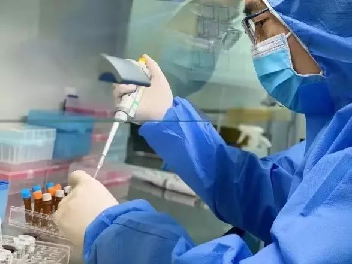
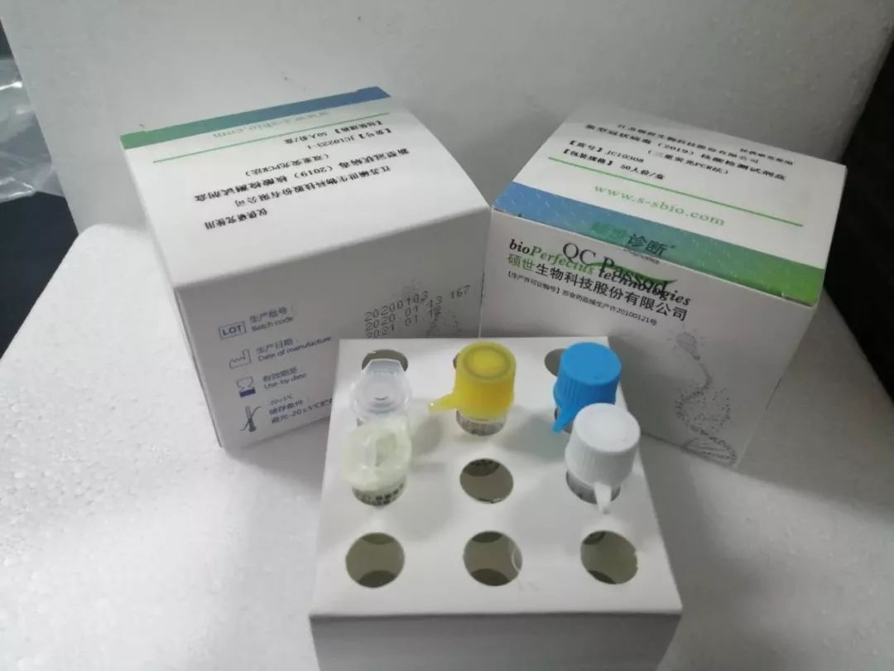

试剂盒供不应求，武汉新型冠状病毒肺炎确诊之难
原文链接 备份链接 根据国家卫健委的通报，截至1月23日零点，共统计到国内新型冠状病毒感染的肺炎确诊病例571例，其中超过400例来自湖北。死亡17例，均来自湖北。此刻的武汉面临以下问题：试剂盒数量不够、确诊艰难、床位短缺、高度疑似患者 …

图 / 上海捷诺生物官网
生产企业工人大多已经放假回家，厂家备货也不够充足。就算外面有支援调货过来，封城后也已经很难运送进来了。很多人想当然地以为这是国家供应的，其实它是按照市场采购流程走的，厂商自己要想办法完成配送
现在不仅仅参加一线救治的医护人员，各医院的全体医护人员都24小时待命。除了身体上疲劳和高强度的心理压力，还面临医用物资短缺问题
本文首发于南方人物周刊
整理 | 徐梅 编辑 | 蒯乐昊
全文约2160字，细读大约需要5分钟
此刻的武汉面临以下问题：试剂盒数量不够、确诊艰难、床位短缺。
新型肺炎病毒试剂盒为什么供不应求？还在一线武汉紧急供货的试剂代理商为《南方人物周刊》发来口述：
我是武汉一个微不足道的试剂代理商，跟医院和试剂盒厂商驻武汉代表都会打交道，试剂盒现在成了焦点，也有很多媒体报道关注，但是这不是一个简单的生产供货，也不是照相馆拍张照片立等可取，所有的厂商都是生物科技公司，他们的产品甚至需要专门的工程师，以及专门培训出来专门为医院服务的操作员。
我们平常也需要跑医院，向医院推荐我们所代理的产品，并要为医院提供“试剂+仪器+服务”的一揽子服务。
我最早感到情况不好，是1月初的那次网传红头文件，那时还以为只是流感病毒很严重，要注意。听到有些做流感病毒相关检测的供应商说，甲乙流抗原检测产品用量激增，跟以往不一样的是，这次并不完全是因为流感，出现了某种不明原因的病毒，没有办法检测，只能采用排除法，把目前能检测的先排除掉。没有任何人提及这个病毒是否有传染性，医院的医生也只是普通防护，可见当时这方面的信息并不多，我们对新型病毒都不了解。
没过两天，听说后湖有家医院感染科门诊已经穿上隔离防护服，这是我生平第一次听说某种疾病的诊断还需要这样戒备，立马感觉到很大的危险性。接下来就听说不明原因的肺炎出现了，但很快又说目前没有人传人，大家也就嘻嘻哈哈没当回事。
1月14日晚上，一个同行问，哪里可以买到防护服，有医院要求检验人员全部穿防护隔离服，我才突然感觉到，事态发展得异乎寻常的快。
针对新型病毒的试剂盒，研发和取得注册证都需要时间，目前能生产的厂商有限

正在这时候朋友圈里不断刷屏，检测新型肺炎的试剂盒出来了，已经有六个厂家可以生产，当时我们觉得非常高兴，因为之前医院都是把可能引起发烧发热的已知病毒查一遍，进行排查，北京来的呼吸专家团队做了必查项目预案，把其中八种病毒列为必查，如果不属于这些原因引起发热情况严重的，就由医院上报，送往金银潭医疗救治中心。
排查法耗时耗力，各医院检验人员也是超负荷运转。现在直接用新的试剂就可以快速确诊了，大家还都挺高兴的。然而，现实很快给人们泼了一盆凉水，试剂没有注册证，按规定不能使用，就算知道可以确诊，一旦有什么问题谁来承担责任呢？当时只有金银潭救治中心是政府采购，可以使用，病人都要到那里检查确诊。
这个过程中我们都记得，有一天报道说已经连续一周没有新发现的病例，再过一天就可以宣布这个不明原因的肺炎已经得到有效控制了。这整个过程中绝大多数人是无感的，武汉正是各单位年终吃年饭的时候，各酒店异常火爆，完全不知道身边潜伏有这样大的危机。
直到1月19号下午，钟南山院士带领的高级别专家团对来武汉考察完毕，发出了预警，各医院紧急开会，我们顿时觉得气氛变了，确定人传人，从那天起我每天出门都会戴好口罩。
假期厂家备货不足，物流目前难以进武汉
1月20日政府紧急通知有三个厂家的新试剂盒（上海辉睿生物、上海捷诺生物、上海伯杰公司）允许使用了，某医院2000人份的试剂用完后发现阳性比例很高，他们担心试剂的可靠性，又通知江苏硕世生物过去做标本比对，最后这家企业的产品也说可以采购了。
1月22日就放开了使用限制，只要有货可以自行采购。然而这时候，很多人已经放假回家，厂家备货也不够充足，再加上这个检测需要特定设施，不是每个医院可以开展的。
截至23日武汉围城，就算外面有支援调货过来，已经很难运送进来了。很多人想当然地以为这是国家供应的，其实它是按照市场采购流程走的，厂商自己要想办法完成配送。
现在朋友圈里盛传，试剂盒供不应求，武汉新型冠状病毒肺炎确诊之难的文章，大家对医院批评很多，但医院自身并没有自主权，现在各级问责，不按规定使用医用物资是要严重处罚的。没有注册证的试剂医院擅自使用本来受严厉管控，没有政府指示肯定是不敢使用的。

江苏硕世生物试剂
试剂盒使用方法很专业，使用不当很易引起交叉感染
试剂使用需要专业的仪器和实验室，有能力做的医院，他们的PCR仪器同时还要做很多其他项目，这个感染性诊断试剂盒如果和其它项目一起做会有交叉感染的风险。必须只做这一个项目才能保证检测结果可靠、检测人员安全。大疫当前，现在每个实验室都是24小时连轴转，患有其他疾病的病人，医院也有责任收治诊疗的，所以这就给检测带来了很大的难度。
我作为一个一线的试剂供应商，所看到的就是这些，因为工作的原因，接触到一线的情况也比较多，我把我看见的说出来，是想让更多焦急的武汉人也知道医院内部是怎么在加速应对突发的紧急状况的。我们这行平常也不怎么受人待见，媒体提起来好像是我们造成了医药费高。但说实话，每个人都是这个社会的一粒尘埃。这两天我看到厂商代表坚守在武汉，想各种办法给有需要的医院紧急送货，这个时候冒着被感染的危险这么做，不可能只是为了钱！
我这两天还在跑医院，现在不仅仅参加一线救治的医护人员，各医院的全体医护人员都24小时待命。除了身体上疲劳和高强度的心理压力，还面临医用物资短缺问题，医护人员还托我们帮忙买防护服、口罩，都是自己花钱。同在危城，不要动不动就开口喷这个喷那个，大家有能力都出点儿力吧！

原文链接 备份链接 根据国家卫健委的通报，截至1月23日零点，共统计到国内新型冠状病毒感染的肺炎确诊病例571例，其中超过400例来自湖北。死亡17例，均来自湖北。此刻的武汉面临以下问题：试剂盒数量不够、确诊艰难、床位短缺、高度疑似患者 …
原文链接 备份链接 记者 | 谢欣 编辑 | 许悦 1 新型病毒核酸检测试剂盒（以下简称“检测试剂盒“）作为本次新型冠状病毒感染的肺炎确诊的重要手段，目前包括武汉在内，各地均有反映院内检测试剂盒缺货的情况发生，而尤以湖北省内居多。 这 …
原文链接 备份链接 【财新网】（记者 黄蕙昭）除夕夜的武汉医院并不平静：人们欢喜静待新一年到来之时，武汉一线的医疗队伍仍在坚守一场未竟的战争。繁忙的救护节奏未因节日有丝毫松缓：从早上七点起，医护人员就到岗穿戴防护用具，期间不喝水、不入 …
原文链接 备份链接 ********** *****他们很想回家，和孩子最近一次见面还是暑假。但谁也不敢回去。“万一有什么事，也不能把病毒扩散到别处，是不是？” ***** 6时35分，汉口站广场上，一队警务人员正在开会。 新京报记者 …
原文链接 备份链接 口述 | 许平 记者 | 王珊 从2019年12月31日到现在，我所在医院的病人越来越多了，以发热门诊为例，目前每天病人的体量已经是医院平常病人数的10多倍，我们医院还在距离市中心比较偏的医院。冬季本身就是流感高发季， …